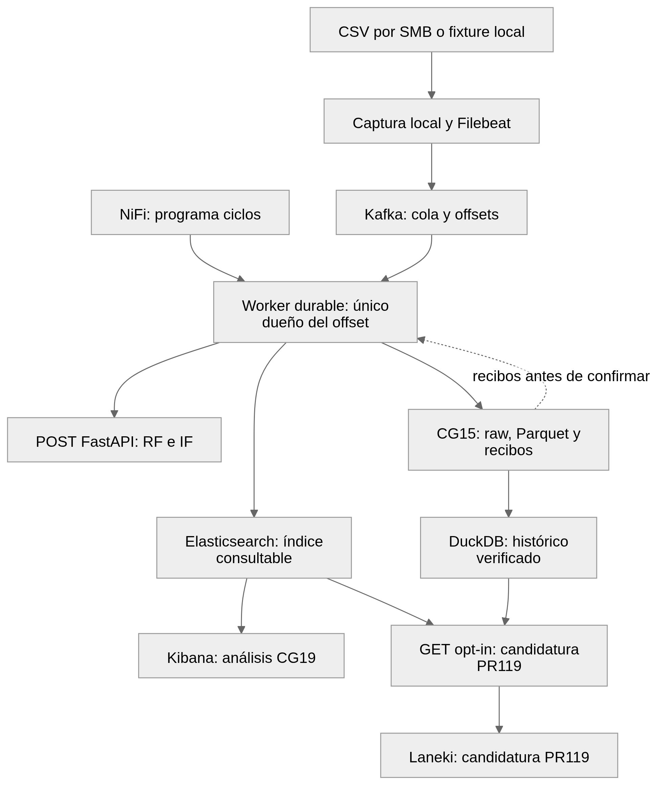
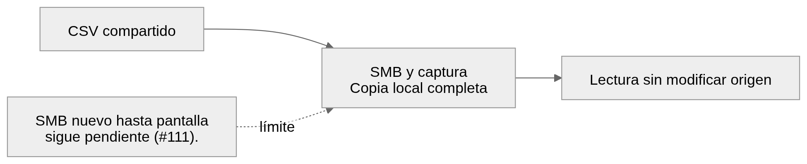
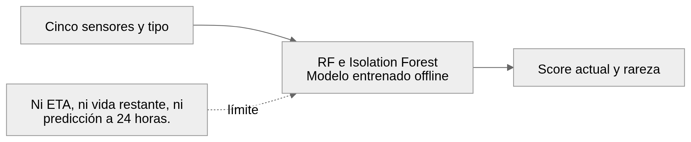
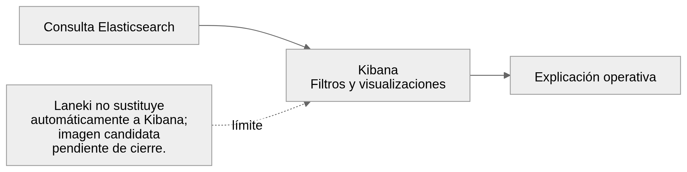
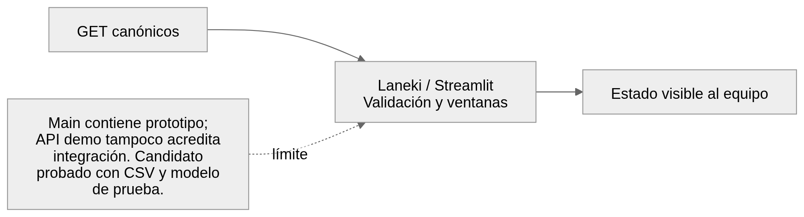
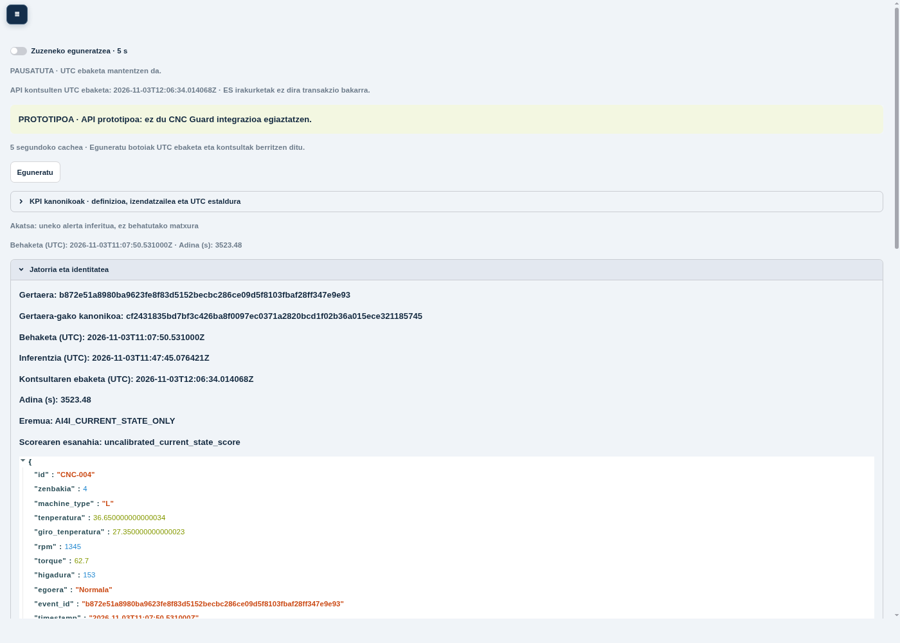
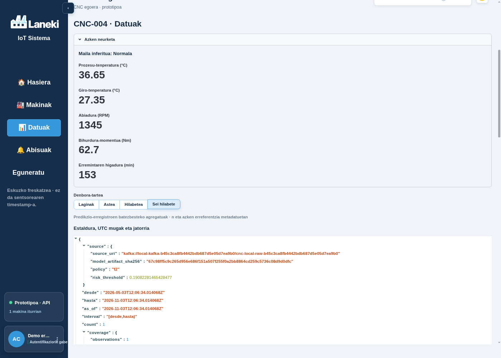
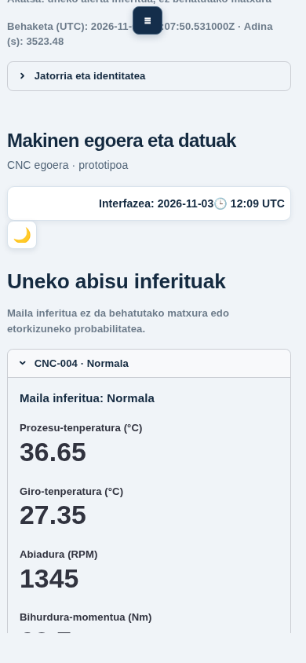

Reunión CNC Guard · decisiones por datos, costes y umbrales
Elegimos conjuntamente datos, representación, modelo, pesos de mezcla y umbral, según los costes y la capacidad de revisión acordados.
Actualización v3 · 04/11/2026. Se mantienen clasificación del estado actual, procedencia y separación entre evidencia local, integración y aceptación humana. El modelo en servicio y su política vigente no se cambian al preparar esta reunión.
1. Decisión conjunta: qué se varía y por qué
| Elemento | Qué se analiza | Qué no se debe confundir |
|---|
| Entradas | Cinco sensores + tipo, unidades, rangos, calidad y cobertura. | Los subtipos de fallo y el objetivo no son entradas; los IDs no crean historia física. |
| Representación | Diferencia térmica; potencia W = rpm×torque×2π/60; desgaste×torque. Ablaciones con/sin derivadas. | Las derivadas facilitan relaciones; no crean datos nuevos ni desgaste físico medido. |
| Modelo e hiperparámetros | 40 configuraciones supervisadas, 10 de anomalías y alternativas de CG08; profundidad, regularización, pesos y representación. | El mejor AP, recall o coste no tiene por qué corresponder al mismo modelo. |
| Mezcla | Pares ponderados, ternas de familias, comités y stacking: 2.998 configuraciones/reglas por partición. | No promediar rarezas brutas como probabilidades. Los miembros se eligen dentro de train. |
| Umbral | Recorrido de todos los puntos de corte distintos de los scores internos; no solo una rejilla en 0,15. | Un score sin calibrar no es probabilidad futura; ni 0,15 ni 0,70 son óptimos universales. |
| Objetivo económico | C_FN×FN + C_FP×FP + C_TP×TP + C_TN×TN. Matriz del ejercicio y escenarios hipotéticos separados. | Coste calculado no es ahorro real ni justifica actuación física automática. |
| Restricciones | Recall interno mínimo, carga de revisión, latencia, memoria, estabilidad y disponibilidad de datos. | Los mínimos de recall son escenarios del estudio; no garantía ni requisito docente nuevo. |
| Validación | Elegir configuración y corte con inner; evaluar después outer. Conservar las 1.200+1.200 filas reservadas fuera. | Los datos ya se han explorado: outer es evidencia de desarrollo, no un test final independiente. |
2. Coste de los cuatro resultados
C = 5.000 FN + 200 FP + 300 TP + 0 TN. Son los parámetros del ejercicio. Detectar un fallo adicional convierte un FN en TP y evita 4.700 € netos hipotéticos. Una falsa alarma cuesta 200 €, por lo que el equilibrio marginal es 23,5 FP adicionales por TP adicional, si todo lo demás permanece igual.
Si hubiese una probabilidad posterior bien calibrada y solo las dos acciones descritas, el corte económico teórico sería (C_FP−C_TN)/(C_FN−C_TP+C_FP−C_TN) = 0,040816. No se aplica directamente al score actual sin demostrar calibración: el corte empírico se aprende dentro del entrenamiento.
3. Comparación principal con umbrales ajustados
5.600 observaciones, 190 positivas, tres particiones externas. Política A: menor coste interno con recall interno ≥76 %. Cada procedimiento puede elegir un modelo, mezcla y umbral distintos por partición. No es un único artefacto listo para producción.
| Procedimiento · umbral ajustado | TP | FN | FP | TN | Recall | €/1.000 |
|---|
| RF referencia | 168 | 22 | 95 | 5315 | 88.42 % | 32.036 |
| Selección de todo el pool | 170 | 20 | 160 | 5250 | 89.47 % | 32.679 |
| Selección individual | 167 | 23 | 112 | 5298 | 87.89 % | 33.482 |
| Selección de pareja | 170 | 20 | 135 | 5275 | 89.47 % | 31.786 |
| Selección de tres familias | 172 | 18 | 169 | 5241 | 90.53 % | 31.321 |
| Selección de comité | 166 | 24 | 108 | 5302 | 87.37 % | 34.179 |
| Selección de stacking | 168 | 22 | 151 | 5259 | 88.42 % | 34.036 |
La selección de tres familias A omite menos positivos y genera más falsas alarmas que RF A. La búsqueda completa o el stacking no mejoran automáticamente el coste. Elegir ahora la fila con mejor resultado outer sería otra selección sobre datos ya examinados; esta tabla no declara un ganador definitivo.
4. Los cortes realmente elegidos no son constantes
| Partición | Umbral RF | Umbral pareja | Pareja elegida dentro del entrenamiento |
|---|
| 1 | 0,175 | 0,214 | cart_depth5+ada_depth1@0.5 |
| 2 | 0,158 | 0,059 | cart_depth5+xgb_d6_True@0.75 |
| 3 | 0,070 | 0,036 | cart_depth5+lgb_15_True@0.75 |
La selección depende de la muestra interna, el modelo y la distribución de sus scores. No utilizar el promedio de estos cortes como nuevo umbral operativo. Hace falta fijar un modelo y una política concretos y verificarlos con evidencia adecuada.
5. Sensibilidad: costes y detección exigida
Se ha ejecutado una ampliación específica: nueve escenarios, 40 individuales y 2.340 pares por escenario, tres particiones. Se optimizan miembros, pesos y corte con inner; después se evalúan RF, selector individual y selector de parejas en outer. No se han vuelto a ajustar bases ni usado validación/test. El mínimo de detección se exige en inner; el recall observado de la tabla pertenece a outer.
| Supuesto | FN pareja | FP pareja | Recall observado | RF €/1.000 | Pareja €/1.000 |
|---|
| Base: recall ≥76 % | 20 | 135 | 89.47 % | 32.036 | 31.786 |
| Base: sin mínimo | 20 | 135 | 89.47 % | 32.036 | 31.786 |
| Base: recall ≥85 % | 20 | 135 | 89.47 % | 32.036 | 31.786 |
| Base: recall ≥90 % | 17 | 163 | 91.05 % | 34.018 | 30.268 |
| Base: recall ≥95 % | 7 | 538 | 96.32 % | 46.661 | 35.268 |
| Hipótesis: FN 10.000 € | 7 | 417 | 96.32 % | 50.768 | 37.196 |
| Hipótesis: FP 500 € | 25 | 20 | 86.84 % | 33.000 | 32.946 |
| Hipótesis: TP 600 € | 20 | 135 | 89.47 % | 41.036 | 40.893 |
| Hipótesis: TN 50 € | 16 | 227 | 91.58 % | 80.161 | 77.991 |
Comparar los dos costes dentro de una misma fila. Al cambiar la matriz, las cifras de distintas filas no miden el mismo objetivo económico. Las variaciones FN/FP/TP/TN son hipótesis, no una sustitución de la matriz docente. Los escenarios de recall 85/90/95 % son decisiones de ingeniería para explorar, no compromisos de servicio.
Ejemplo con los costes base: exigir 95 % de recall interno lleva a la pareja a 7 FN y 538 FP en outer; el escenario base deja 20 FN y 135 FP. Detectar más puede multiplicar las inspecciones. Si FP cuesta 500 €, el selector de parejas cambia a cortes más altos y deja 25 FN y 20 FP. No hay un umbral correcto al margen del objetivo y de su contexto.
La sensibilidad es descriptiva y posterior a estudios previos. No elegir el escenario «recall90» mirando su buen resultado outer y presentarlo como garantía: la decisión de costes/restricciones debe justificarse antes y luego validarse.
6. Dónde quedan 0,15 y 0,70
Se conservan como referencias del contrato histórico y para reconocer lo mostrado en capturas antiguas. La política B, fija a 0,15, y C, fija a 0,70, están en los anexos; no gobiernan esta comparación principal. En las filas observadas, RF B cuesta 30.893 €/1.000 y RF A 32.036 €/1.000: optimizar en train no garantiza mejorar en outer.
La comparación debe incluir calibración y estabilidad. Un mismo número puede significar decisiones distintas entre modelos. El candidato CART 75 % + LightGBM 25 % de la entrega anterior se seleccionó con screening y referencia 0,15; queda como artefacto de investigación identificado, no como política óptima recomendada por esta actualización.
7. Información aprovechable y límites de los datos
Entradas válidas: temperatura de aire y proceso, rpm, torque, desgaste en minutos y tipo H/M/L. Las derivadas físicas están estudiadas y las ablaciones históricas muestran utilidad. El train permitido contiene 5.600 filas, 190 positivas, sin nulos ni duplicados en las seis entradas.
El desgaste sigue siendo un punto débil: los errores dependen también del corte. Con la referencia fija B, RF omitía 16 de 17 TWF y el selector de pareja 14; con el selector de pareja A se omiten 13. Es diagnóstico posterior, no una predicción del subtipo ni prueba de capacidad industrial. Hay seis positivos sin subtipo que requieren conservar su etiqueta y explicar el límite, sin relabelar para mejorar métricas.
No hay trayectoria física fiable por máquina que permita convertir esta evidencia en ETA, RUL o probabilidad de fallo mañana. Más modelos no recuperan sensores o resultados de mantenimiento que no se han medido. El panel debe separar etiqueta observada, clasificación inferida, rareza, origen, cobertura y antigüedad.
8. Qué acuerda cada área en la reunión
| Área | Qué aporta y qué debe explicar |
|---|
| Sistemas | Origen SMB o fixture, unidades y montajes, permisos, recuperación y recursos. Explicar recepción Kafka frente a persistencia completa. |
| Generalista ML/LLM | Familias, variables, desbalance, calibración, selección interna, costes y errores. El LLM ayuda al equipo; no es el modelo CNC. |
| PM | Fijar objetivo, matriz de costes, restricciones y evidencia que permitiría aceptar una política. Distinguir aceptación PM, docente y humana. |
| Dev | Identidad de fuente/modelo/política/corte, respuesta canónica, archivo y lecturas coherentes; no cambiar servicio por una tabla de investigación. |
| Dashboard | Explicar qué datos y política se muestran, denominadores, filtros y degradación; no presentar el color como verdad física o probabilidad futura. |
9. Agenda de 60 minutos y acuerdos que registrar
| Minutos | Contenido |
|---|
| 0–10 | Todos: qué observamos, qué clasificamos y qué datos faltan. Mapa de servicios. |
| 10–20 | Sistemas/dev: seguir el mismo evento hasta archivo, índice y pantalla. |
| 20–35 | ML/PM: variables, modelos, costes TP/FP/FN/TN y comparación con corte ajustado. |
| 35–45 | Sensibilidad: elegir los supuestos que tiene sentido defender; capacidad humana para revisar avisos. |
| 45–55 | Dashboard y ronda cruzada: explicar una decisión ajena y reconocer ausencia de datos. |
| 55–60 | Responsables confirmados, evidencia pendiente y versión que se usará en el ensayo. |
Registrar: versión de código y modelo; procedencia; entradas y unidades; regla de decisión; corte; matriz de costes; mínimo de recall si lo hay; presupuesto de alertas; TP/FP/FN/TN evaluados; latencia y límites; persona que valida y pendientes reales. No rellenar actas por personas ni declarar una reunión celebrada.
10. Rúbrica y estado de integración
Se mantiene la estimación anterior de preparación, alrededor de 8/10 y banda orientativa 7–8,5 para defensa. Esta ampliación fortalece la explicación de G10/G32/G38/G39/G45/G60/G62/G104; no incrementa automáticamente una nota. Persisten pesos docentes ambiguos, explicación individual y aceptación/entrega humana.
Main sigue en c34cabe. Los informes y capturas de la candidatura anterior fijan d7cfa18 y sus propios commits de ejecución. Consulta actual de PR119: OPEN, head ea0a89e, REVIEW_REQUIRED. No se atribuyen los ensayos antiguos al nuevo head ni se audita ese código en esta actualización documental.
11. Evidencia y anexos
27 resultados de sensibilidad · 81 selecciones con miembros y cortes · supuestos de los nueve escenarios · verificación.
Comparativa extensa previa, con A/B/C y candidato de investigación. Las figuras, fuentes y las 40 valoraciones de rúbrica se conservan en este paquete.
Anexo 2. Mapa que se proyecta al empezar

Arquitectura explicativa: ramas de visualización y lectura; no es una captura ni una prueba de ejecución simultánea.Seguid una sola fila: llega al buzón, Filebeat la envía a Kafka, NiFi programa un ciclo, el worker valida y solicita el score. Antes de confirmar el mensaje exige los recibos del archivo y del índice configurados. Después Kibana o la lectura GET permiten mostrarla. Si el mismo evento se reintenta, se conserva su respuesta canónica; si cambia su contenido de forma incompatible, se rechaza el conflicto. [S05/S12]
Anexo 5. Una imagen por servicio: fichas para explicar
SMB y captura · El buzón de archivos

SMB y captura: esquema conceptual, no captura de ejecución.No es una máquina conectada en directo. La copia conserva procedencia. Entrada: CSV compartido. Salida: Lectura sin modificar origen. Área que lo explica: Sistemas. Límite: SMB nuevo hasta pantalla sigue pendiente (#111). [S04/S03]
Filebeat · El mensajero
 Filebeat: esquema conceptual, no captura de ejecución.
Filebeat: esquema conceptual, no captura de ejecución.Recuerda por dónde iba leyendo y envía registros a la cola. Entrada: CSV local. Salida: Kafka. Área que lo explica: Sistemas. Límite: Un ACK de Kafka no demuestra todavía scoring ni archivo. [S04/S10]
Kafka · La sala de espera
 Kafka: esquema conceptual, no captura de ejecución.
Kafka: esquema conceptual, no captura de ejecución.Permite que el productor y el consumidor trabajen a ritmos diferentes. Entrada: Eventos recibidos. Salida: Worker consumidor. Área que lo explica: Sistemas + dev. Límite: Mononodo; una cola no arregla una capacidad insuficiente. [S05/S07/S10]
NiFi · El coordinador de ciclos
 NiFi: esquema conceptual, no captura de ejecución.
NiFi: esquema conceptual, no captura de ejecución.En la vía aceptada, programa el worker mediante ExecuteStreamCommand. Entrada: Trigger periódico. Salida: Diagnóstico del ciclo. Área que lo explica: Sistemas. Límite: No afirmar que ConsumeKafka o InvokeHTTP nativos realizaron ese recorrido. [S05/S03]
Worker durable · El repartidor con recibos
 Worker durable: esquema conceptual, no captura de ejecución.
Worker durable: esquema conceptual, no captura de ejecución.Pide el scoring y verifica recibos antes de dar por atendido el mensaje. Entrada: Consume Kafka. Salida: Confirma offset. Área que lo explica: Dev + sistemas. Límite: Reintentos al menos una vez con deduplicación; no exactly-once global. [S05/S10]
RF e Isolation Forest · El clasificador y la señal de rareza

RF e Isolation Forest: esquema conceptual, no captura de ejecución.RF aprende de etiquetas; IF señala observaciones raras. El LLM ayuda a trabajar, no puntúa las máquinas. Entrada: Cinco sensores y tipo. Salida: Score actual y rareza. Área que lo explica: Generalista ML/LLM + dev. Límite: Ni ETA, ni vida restante, ni predicción a 24 horas. [S04/S14/S06]
FastAPI · La ventanilla común
 FastAPI: esquema conceptual, no captura de ejecución.
FastAPI: esquema conceptual, no captura de ejecución.POST calcula o recupera respuesta; GET del candidato consulta datos guardados sin volver a entrenar. Entrada: Petición validada. Salida: POST y GET opt-in. Área que lo explica: Dev. Límite: Main no incorpora aún el nuevo router. 409, 422 y 503 significan cosas diferentes. [S04/S12/S10]
CG15: SQLite, Parquet y DuckDB · El archivo y su catálogo
 CG15: SQLite, Parquet y DuckDB: esquema conceptual, no captura de ejecución.
CG15: SQLite, Parquet y DuckDB: esquema conceptual, no captura de ejecución.SQLite registra compromisos; Parquet guarda objetos; DuckDB consulta. No son tres copias redundantes. Entrada: Raw y predicción. Salida: Lectura histórica verificada. Área que lo explica: Dev + sistemas. Límite: GET no repara archivos; migración del índice antiguo es explícita y offline. [S05/S12/S10]
Elasticsearch · El índice de consulta
 Elasticsearch: esquema conceptual, no captura de ejecución.
Elasticsearch: esquema conceptual, no captura de ejecución.Hace localizables eventos y sensores conservando fuente, modelo y política. Entrada: Evento canónico. Salida: Consultas y KPI. Área que lo explica: Sistemas + dev. Límite: No mezclar modelos u orígenes; caída implica degradación, no relleno demo. [S02/S10/S12]
Kibana · El panel de análisis del laboratorio

Kibana: esquema conceptual, no captura de ejecución.Tiene evidencias históricas propias y entregables CG19. Sigue siendo parte de la rúbrica. Entrada: Consulta Elasticsearch. Salida: Explicación operativa. Área que lo explica: Dashboard + sistemas. Límite: Laneki no sustituye automáticamente a Kibana; imagen candidata pendiente de cierre. [S02/S04]
Laneki / Streamlit · El panel para contar el estado

Laneki / Streamlit: esquema conceptual, no captura de ejecución.Hasiera, Makinak, Datuak y Abisuak muestran estado, histórico, procedencia y degradación en el candidato. Entrada: GET canónicos. Salida: Estado visible al equipo. Área que lo explica: Dashboard + dev. Límite: Main contiene prototipo; API demo tampoco acredita integración. Candidato probado con CSV y modelo de prueba. [S09/S10/S12]
Docker, runtime y acceso · Las cajas y las llaves
 Docker, runtime y acceso: esquema conceptual, no captura de ejecución.
Docker, runtime y acceso: esquema conceptual, no captura de ejecución.Fija dependencias, montajes y límites; permite repetir el entorno. El gateway LAN es opcional. Entrada: Imágenes y lock. Salida: Acceso local o LAN mTLS. Área que lo explica: Sistemas. Límite: Contenedores en un host no aportan alta disponibilidad. Builds y escaneos dependen del SHA. [S19/S10/S15/S16]
Anexo 6. Pantallas que sí existen, con su contexto
Estas imágenes se copian de evidencias locales conservadas. Se han comprobado sus bytes al empaquetar, pero no se han vuelto a arrancar servicios ni capturado pantallas en esta revisión. No hay capturas disponibles de todas las consolas de servicios; sus fichas anteriores son diagramas, no pantallas simuladas. [S10/S11]

Laneki en imagen local, 03/11; CSV sintético y modelo de prueba. No captura del main ni de sensores industriales. Detalle visible en la sesión local de imagen; captura exitosa documentada, distinta del clic inicial fallido.
Detalle visible en la sesión local de imagen; captura exitosa documentada, distinta del clic inicial fallido.
Selección de seis meses; elegir una ventana no acredita seis meses de cobertura.
Vista móvil del ensayo local de la imagen, 390 × 844.![Kibana: evidencia histórica CG20 del 22/10. Recorrido con RiskDouble/AnomalyDouble; no RF industrial ni captura nueva de la PR119. [S02]](imagenes/kibana-historico.png) Kibana: evidencia histórica CG20 del 22/10. Recorrido con RiskDouble/AnomalyDouble; no RF industrial ni captura nueva de la PR119. [S02]
Kibana: evidencia histórica CG20 del 22/10. Recorrido con RiskDouble/AnomalyDouble; no RF industrial ni captura nueva de la PR119. [S02]Anexo 8. Valoración predictiva frente a los 40 criterios
Índice orientativo de preparación: main 8.11/10; candidato PR119 8.32/10. Es mi juicio por criterio, con media simple y pesos iguales de 1/40. No es una fórmula docente ni una predicción estadística. La diferencia mide evidencia adicional disponible en el candidato y no concede puntos oficiales por una PR sin integrar.
Estimación para una defensa basada en el estado disponible: banda de trabajo 7–8,5/10; si se integra y verifica el candidato, se resuelven las equivalencias con el docente y los participantes dominan el recorrido, escenario razonable 8–9/10. Son escenarios de criterio profesional, sin probabilidades ni intervalos de confianza. Una defensa débil o una lectura docente estricta puede quedar por debajo de esas bandas. No hay evidencia para prometer un 10.
La fuente exacta contiene 40 descriptores de AURRERATUA (10), no todas las escalas inferiores: por eso los decimales no deben interpretarse como precisión de medida. Los pesos no forman aquí una ponderación global válida: hay 15%% y celdas sin peso. Se conserva el valor original; no se normalizan módulos ni se inventan porcentajes. A01/A02 siguen pendientes. [S01/S03]
Guía usada al valorar: 9 indica evidencia amplia con límites explícitos; 8–8,5 indica evidencia buena con una puerta de cobertura o explicación pendiente; 7–7,5 indica adaptación literal, evidencia parcial o aceptación pendiente relevante. Una fuente o un test no prueba que cada integrante sepa explicarlo. La estimación es sobre preparación del proyecto, no sobre la nota individual.
| Celda | Criterio resumido | Main | PR119 | Evidencia y reserva |
|---|
| G5 | Principios y autonomía | 8 | 8 | S02/S04 · Explicar aprendizaje offline, inferencia actual y decisión humana; comprobar comprensión individual. |
| G10 | Clasificación y comparación de modelos | 9 | 9 | S14 · RF, boosting, IF y AE investigados; justificar límites y por qué no se promueve un ganador por una sola métrica. |
| G14 | Costes, umbrales y viabilidad | 8 | 8 | S03/S07/S17 · Separar costes del ejercicio, score y latencia total. La meta E2E de 1 s no se alcanzó. |
| G16 | Riesgos legales y éticos | 8 | 8 | S02 · Análisis documental aceptado por PM; defensa pendiente. No equivale a certificación. |
| G17 | Privacidad y secretos | 8.5 | 8.5 | S02 · Finalidad y separación del control laboral documentadas; conservar límites del laboratorio. |
| G19 | Seguridad desde el diseño | 8 | 8 | S02/S15/S16 · Controles de laboratorio; candidatura con cierre de imágenes NiFi/Kibana pendiente. |
| G20 | Privacidad en el conjunto del diseño | 8 | 8 | S02 · Documentación aceptada; no demuestra cumplimiento universal de cualquier uso futuro. |
| G23 | IA específica frente a general | 7.5 | 7.5 | S02/S08 · Contenido preparado, explicación personal sin acreditar. El LLM no es el modelo CNC. |
| G24 | Reglas frente a ML | 7.5 | 7.5 | S02/S08 · Distinguir score aprendido y reglas fijas de aviso en la exposición. |
| G31 | Tipos de aprendizaje y datos | 8 | 8 | S14/S08 · Investigación amplia; rareza no es fallo confirmado, y falta explicación individual. |
| G32 | Técnicas y herramientas elegidas | 8.5 | 8.5 | S04/S14 · Ecosistema y alternativas documentados; evitar defensa basada solo en nombres de herramientas. |
| G36 | EDA y preparación | 9 | 9 | S02 · Tratamiento reproducible del CSV reducido; no crear cronología física. |
| G38 | Features y fuga de información | 8.5 | 8.5 | S02/S14 · Features físicas y aislamiento del ajuste; no atribuir al runtime técnicas solo investigadas. |
| G39 | Evaluación e interpretación | 8 | 8 | S06/S10 · Matriz conciliada sobre desarrollo reutilizado; evaluación del modelo local de prueba no vinculada. |
| G41 | API y servicio robusto | 8.5 | 9 | S04/S10/S12 · Candidatura añade GET e imagen verificada localmente; merge y campaña completa separados. |
| G45 | Adecuación y desbalance | 8 | 8 | S06/S17 · Recall de desarrollo supera referencia literal; adecuación industrial no demostrada. |
| G46 | Fiabilidad de extremo a extremo | 7.5 | 8 | S07/S10 · Recuperación y balances históricos; ensayo nuevo acotado no demuestra todo el stack simultáneo. |
| G49 | Automatización del streaming | 7 | 7.5 | S03/S05/S10 · SMB y worker aceptados por PM; literal NFS y valoración docente pendientes; SMB nuevo no probado. |
| G52 | Elección de Python | 8.5 | 8.5 | S02/S04 · Justificación y uso coherentes; preparar comparación breve y limitaciones. |
| G55 | Estructura modular y validación | 9 | 9 | S04/S12 · Separación entrenamiento/servicio y contratos; candidatura añade lectura acotada. |
| G60 | Modelo, desbalance y métricas | 8.5 | 8.5 | S14/S06 · Estudios comparables; explicar accuracy engañosa y no llamar calibrado al score sin evidencia. |
| G61 | Implementación y umbrales | 8.5 | 8.5 | S06/S20/S03 · 0,15/0,70 preservados; distinguir regla binaria de evaluación y modelo exacto desplegado. |
| G62 | Mejoras, CV e histórico | 7 | 7.5 | S03/S14/S12 · Histórico de observaciones no es histórico causal por máquina para entrenar; literal G62 pendiente. |
| G65 | Información útil para mantenimiento | 7.5 | 8 | S02/S10 · Nuevo panel con evento visible; falta ensayo de equipo y decisión simulada explicada. |
| G66 | Coherencia de formatos | 8.5 | 9 | S02/S10/S12 · Contratos y procedencia; candidatura conserva identidad y nulls, comprobados en recorrido local. |
| G68 | Índices e ingest pipelines | 9 | 9 | S02/S10 · Instalación y validación documentadas; no implica migración de índices compartidos. |
| G71 | Gráficas, filtros y agregaciones | 8 | 8.5 | S02/S10 · Kibana histórico y nuevo panel tienen evidencias distintas; explicar denominadores y ventanas. |
| G72 | Sensores y decisión de mantenimiento | 7.5 | 8 | S08/S17/S10 · Decisiones simuladas y costes; no se acredita intervención ni ahorro real. |
| G77 | Extracción y archivo íntegro | 8.5 | 9 | S02/S10/S12 · Archivo/recibos; candidatura verifica índice, bronze y Parquet; no prueba pérdida de host. |
| G80 | Carga y eficiencia segura | 8 | 8 | S07/S15 · Carga real medida con límites y mejora; no cumple meta E2E, quedan gates de imágenes. |
| G85 | Mononodo frente a redundancia | 8 | 8 | S02/S07 · Límites documentados; falta demostración de comprensión oral; no hace falta inventar HA. |
| G87 | Dashboard claro y completo | 8 | 8.5 | S02/S09/S10 · Main conserva prototipo Laneki; candidato tiene imágenes y navegación local verificadas. |
| G90 | Kafka, offsets y reinicios | 8.5 | 9 | S07/S10 · ACK tras persistencia; replay nuevo por stdin no es redelivery forzada del broker. |
| G92 | Transformación, API y rutas | 7.5 | 8 | S03/S05/S10 · NiFi programa worker; no se presenta InvokeHTTP/ConsumeKafka nativo como ejecutado. |
| G95 | Calidad de datos | 8.5 | 8.5 | S02/S12 · Rechazos y coherencia documentados; explicar nulo, formato inválido y duplicado. |
| G96 | Interrupciones y duplicados | 8.5 | 9 | S07/S10 · Cero pérdidas en campaña acotada y replay; no equivale a exactly-once distribuido. |
| G100 | Selección de señales y resultados | 8 | 8.5 | S02/S10 · Identidad y sensores preservados; score no es riesgo futuro ni medida de desgaste. |
| G101 | Limpieza y transformación | 8.5 | 9 | S02/S12 · Validación y archivo; no rellenar faltantes con datos plausibles. |
| G104 | Interpretar alertas y costes | 7.5 | 8 | S17/S08/S10 · Casos preparados; ahorro, coste esperado y decisión operativa real no demostrados. |
| G105 | BI y presentación | 7.5 | 8 | S08/S10 · Material y panel preparados; explicación humana y entrega aún no acreditadas. |
Anexo 12. Glosario de bolsillo
| Palabra | Explicación |
|---|
| Inferencia | Aplicar un modelo ya entrenado a una fila. |
| Entrenamiento | Aprender patrones con datos autorizados y un procedimiento evaluable. |
| Score | Salida numérica del modelo; su interpretación depende del objetivo y su evaluación. |
| FP / FN | Avisar cuando la etiqueta es negativa / no detectar una etiqueta positiva. |
| Offset / ACK | Posición en la cola / confirmación de una etapa concreta. |
| Replay / idempotencia | Repetir un evento / conservar el resultado sin duplicarlo indebidamente. |
| Ledger / recibo | Registro de lo comprometido / prueba verificable de aceptación por un destino. |
| Hash / procedencia | Huella de bytes / información que explica origen y transformaciones. |
| KPI / cobertura | Indicador con denominador definido / qué datos realmente abarca. |
| p95 / lag | Tiempo bajo el que cae el 95 % de observaciones / trabajo pendiente en cola. |
| HA | Continuidad ante fallos mediante redundancia; no aportada por muchos contenedores en un solo host. |
| Opt-in / degradado | Activado explícitamente / servicio que comunica una limitación real. |
Anexo 13. Fuentes incluidas para comprobar decisiones
Las copias siguientes fijan bytes de Git y permiten revisar este dossier offline. Los enlaces internos que ya traían esos documentos pueden apuntar fuera de esta selección. El manifiesto del paquete registra hashes, commits y procedencia de capturas. La lectura y el hash no reproducen los ensayos ni certifican aceptación humana.
S01: docs/rubrica/fuente.json · c34cabe
S02: docs/rubrica/ESTADO_20261028.md · c34cabe
S03: docs/rubrica/ACLARACIONES_20261023.md · c34cabe
S04: README.md · c34cabe
S05: docs/CG14_AUTOMATIC_GRAPH.md · c34cabe
S06: docs/evidence/CG10_PRECISION_20261022.md · c34cabe
S07: docs/evidence/CG32_CAMPAIGN_20261028.md · c34cabe
S08: docs/demo/PENDING_HANDOFF_20261028.md · c34cabe
S09: dashboard_laneki/README.md · c34cabe
S10: docs/evidence/LOCAL_CONTAINERS_20261103.md · d7cfa18
S11: docs/evidence/LOCAL_PIPELINE_BROWSER_20261103.md · d7cfa18
S12: docs/backend/READ_API.md · d7cfa18
S13: docs/memoria/RECONCILIACION_20261103.md · d7cfa18
S14: docs/evidence/ML_DECISION_REVIEW_20261023.md · c34cabe
S15: docs/evidence/NIFI_CI_BLOCKERS_20261104.md · d7cfa18
S16: docs/evidence/WIRE5_REVIEW_STATUS_20261104.md · d7cfa18
S17: docs/evidence/DOCENTE_FORO_20261023.md · c34cabe
S18: docs/demo/ENTSEGU_PRESTATUA_20261028.md · c34cabe
S19: docker-compose.yml · c34cabe
S20: scoring/alert_policy.py · c34cabe